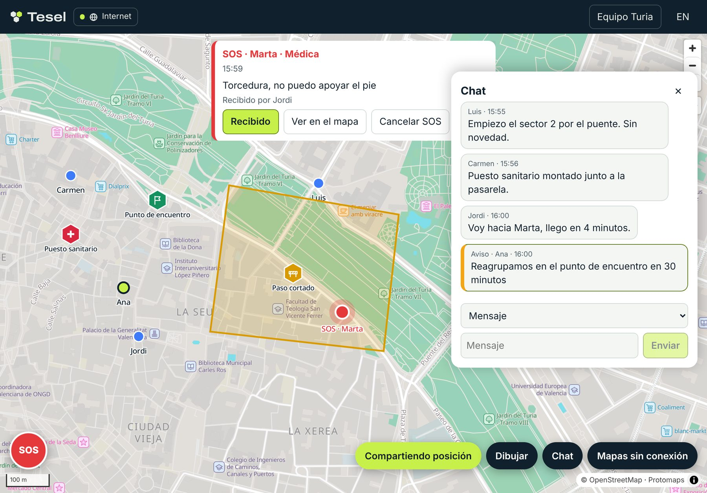

Coordinación de equipos sobre el terreno
Consciencia situacional para equipos.
Posiciones, mensajes, alertas e incidentes de todo el equipo en un mapa común y en tiempo real. Con una red de respaldo propia que sigue funcionando cuando caen la telefonía o la electricidad.
- Software libre
- Cifrado de extremo a extremo
- Sin cuentas
Foto: Maël Balland
Capacidades
Una imagen operativa común.
Cada miembro ve lo mismo, en el mismo mapa y al mismo tiempo: dónde está el equipo, qué está pasando y qué se ha decidido.

-
Seguimiento del equipo
La posición de cada miembro en tiempo real. Cada cual decide cuándo compartirla, pausarla u ocultarla.
-
SOS con confirmación
Una petición de ayuda, con su tipo y su posición, llega a todo el equipo al instante. Quien la emite ve quién la ha recibido.
-
Mensajería del equipo
Mensajes breves, pensados para viajar también por radio. Lo que se escribe sin cobertura sale en cuanto hay enlace.
-
Avisos de coordinación
Quien coordina emite avisos por niveles. Los críticos permanecen en pantalla hasta que cada miembro los confirma.
-
Marcado del terreno
Sectores, puntos de encuentro, peligros y rutas, compartidos y editables por todo el equipo.
-
Cartografía sin conexión
El mapa de la zona de operaciones, descargado de antemano. Sigue disponible aunque no haya red.
Conectividad
Sigue funcionando cuando cae la red.
La misma app y los mismos datos, sea cual sea la infraestructura disponible. Tesel usa el enlace que encuentra y sincroniza todo al recuperar la conexión.
Internet
Con cobertura móvil o wifi, a través del servidor de Tesel o del vuestro. El servidor reenvía los datos cifrados sin poder leerlos.
Malla de radio LoRa
Cada móvil se enlaza por Bluetooth con una radio de bolsillo. Las radios retransmiten los mensajes entre ellas a kilómetros de distancia, sin antenas de telefonía.
Puesto de mando
Un ordenador despliega una red wifi local en la zona de operaciones y hace de servidor del equipo. Puede enlazar con la malla de radio y, cuando recupera internet, sincroniza con el resto de la organización.
Ámbitos
Para equipos que trabajan sobre el terreno.
-
Protección civil
Agrupaciones de voluntariado y servicios municipales, en emergencias y preventivos.
-
Búsqueda y rescate
Batidas por sectores, con el terreno repartido y cada equipo a la vista.
-
ONG y ayuda humanitaria
Equipos desplegados donde la infraestructura falla o no existe.
-
Eventos y dispositivos
Seguridad, sanitarios y organización en carreras, festivales y concentraciones.
-
Montaña y expediciones
Grupos fuera de cobertura que necesitan saber unos de otros.
Despliegue
Operativo en tres pasos.
Sin instalaciones ni altas. Lo que lleva tiempo es practicar, y conviene hacerlo antes.
-
Crea el equipo
Quien coordina crea el grupo e invita con un enlace o un código QR. Cada miembro solo elige su nombre.
-
Prepara la zona
Descargad el mapa de la zona de operaciones con wifi y, si usáis radio, enlazadla con el móvil.
-
Haz un simulacro
Practicad posiciones, SOS y avisos un día tranquilo. Una emergencia no es el momento de aprender una herramienta.
Empieza ahora
Funciona en el navegador.
En cualquier móvil, tablet u ordenador, desde tesel.eu/app. Sin tiendas de aplicaciones, y se actualiza sola.
Abrir TeselInstálala como una app
- Android, con Chrome: menú ⋮, «Añadir a pantalla de inicio».
- iPhone, con Safari: botón Compartir, «Añadir a pantalla de inicio».
- Ordenador, con Chrome o Edge: el icono de instalar en la barra de direcciones.
Apps nativas para Android e iOS en desarrollo: posición en segundo plano, alertas con la app cerrada y radio también en iPhone.
Seguridad
Privacidad por diseño.
-
Sin cuentas
Ni correo, ni teléfono, ni contraseña. Cada miembro solo elige un nombre.
-
Cifrado de extremo a extremo
La clave solo la tiene el equipo. Ni el servidor ni el puesto pueden leer nada.
-
Sin rastreo
Sin anuncios, sin analítica y sin registros de quién se conecta.
-
Código abierto
Licencia europea EUPL. Cualquiera puede auditarlo o desplegar su propio servidor.
Tesel no sustituye al 112. Si puedes llamar, llama.
Preguntas
Antes de desplegarlo.
¿Cuesta algo?
No, y no va a costar. Solo las radios, si decidís usarlas.
¿Necesitamos radios?
No. Con cobertura, Tesel funciona sin nada más. Las radios y el puesto de mando son para cuando no la hay.
¿Qué radios son compatibles?
Radios LoRa con MeshCore y su programa «Companion Bluetooth». Estamos validándolas en campo y publicaremos aquí los modelos recomendados.
¿Funciona en iPhone?
Sí, con internet o a través de un puesto de mando. Safari no permite conectar una radio por Bluetooth; para eso llegará la app nativa.
¿Podemos usar nuestro propio servidor?
Sí. El servidor es software libre y funciona en un ordenador modesto, en la nube o como puesto de mando sin internet.
¿Quién está detrás?
Un proyecto ciudadano de software libre, con licencia europea EUPL-1.2.